Lineare Anpassung für kinetische Modelle
Linear-Fit-For-Kinetic-Models
Zusammenfassung
Nichtlineare kinetische Modelle werden weitläufig in vielen Disziplinen eingesetzt, z.B. in den Naturwissenschaften wie Physik, Chemie, Biologie. Experimentell werden alle ausschlaggebenden Parameter in kinetischen Modellen durch das Anpassen der Rohdaten ermittelt. Intuitiv werden Rohdaten durch die Durchführung einer nichtlinearen Anpassung mit dem Ausdruck direkt aus der kinetischen Gleichung angepasst. Alternativ kann eine lineare Anpassung durchgeführt werden, wenn die Gleichung so transformiert werden kann, dass die abhängige Variable in einem linearen Verhältnis zur unabhängigen Variable steht.
Was Sie lernen werden
Dieses Tutorial zeigt Ihnen, wie Sie:
- eine lineare Anpassung auf das gleiche nichtlineare kinetische Modell mit Hilfe verschiedener linearer Transformationen durchführen,
- eine scheinbare lineare Anpassung auf nichtlineare kinetische Modelle durchführen.
Lineare Anpassung für Langmuir-Modelle
Transformierte unabhängige und abhängige Variablen identifizieren
Das Langmuir-Modell wird durch die nichtlineare Gleichung unten beschrieben:
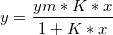
wobei ym, K Parameter sind, die durch Anpassung ermittelt werden sollen.
Um eine lineare Anpassung auf das Langmuir-Modell durchzuführen, können Sie es auf zwei verschiedenen Wegen in eine lineare Gleichung transformieren:
- Transformieren Sie es in eine traditionelle lineare Langmuir-Gleichung:
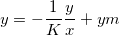
, wobei die unabhängige Variable y/x ist, die abhängige Variable y, die Steigung -1/K und der Schnittpunkt mit der Y-Achse ym.
- Transformieren Sie es in eine doppelt reziproke lineare Langmuir-Gleichung:
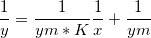
, wobei die unabhängige Variable 1/x ist, die abhängige Variable 1/y, die Steigung 1/(ym*K) und der Schnittpunkt mit der Y-Achse 1/ym.
Neue unabhängige und abhängige Variablendaten erstellen
- Öffnen Sie eine neue Arbeitsmappe.
- Klicken Sie auf die Schaltfläche ASCII-Datendatei
 , um den Dialog zum Importieren von ASCII-Dateien aufzurufen. Navigieren Sie zu dem Ordner \Samples\Curve Fitting und wählen Sie die Datei LangmuirModel.dat. Stellen Sie sicher, dass das Kontrollkästchen Optionendialog zeigen aktiviert ist, und klicken Sie auf OK, um den Dialog impASC zu öffnen. Wählen Sie Nein in der Auswahlliste Sparklines hinzufügen im Zweig Importoptionen und klicken Sie auf OK, um den Import fertigzustellen.
, um den Dialog zum Importieren von ASCII-Dateien aufzurufen. Navigieren Sie zu dem Ordner \Samples\Curve Fitting und wählen Sie die Datei LangmuirModel.dat. Stellen Sie sicher, dass das Kontrollkästchen Optionendialog zeigen aktiviert ist, und klicken Sie auf OK, um den Dialog impASC zu öffnen. Wählen Sie Nein in der Auswahlliste Sparklines hinzufügen im Zweig Importoptionen und klicken Sie auf OK, um den Import fertigzustellen.
- Rufen Sie den Dialog Neue Spalten hinzufügen mit Hilfe von Strg+D auf, geben Sie 4 ein und klicken Sie auf OK, um 4 Spalten hinzuzufügen, in denen der transformierte XY-Datensatz später gespeichert wird.
- Für die traditionelle Transformation des linearen Langmuir-Modells ist die unabhängige Variable jetzt y/x und die abhängige Variable noch y. Geben Sie y/x und y als Langname für Spalte C bzw. D ein, so dass sie im Diagramm später als Titel der X-Achse bzw. Y-Achse angezeigt werden.
- Geben Sie Col(B)/Col(A) in der Formelzelle F(x) = in Spalte C ein, um den Wert für die unabhängige Variable y/x festzulegen, und drücken Sie ENTER. Markieren Sie Spalte C, klicken Sie mit der rechten Maustaste und wählen Sie Setzen als: Als X setzen, um sie zum Standard für den X-Datensatz der Zeichenspalte D zu machen.
- Geben Sie Col(B) in der Formelzelle F(x) = in Spalte D ein, um den Wert für die abhängige Variable y festzulegen, und drücken Sie ENTER.
- Für die doppelt reziproke Transformation des linearen Langmuir-Modells ist die unabhängige Variable 1/x und die abhängige Variable 1/y. Legen Sie entsprechend den Langnamen der Spalten E und F als 1/x bzw. 1/y fest und setzen Sie ihre Spaltenwerte mit 1/Col(A) und 1/Col(B). Weisen Sie Spalte E als X zu.
- Das Arbeitsblatt sieht dann folgendermaßen aus:
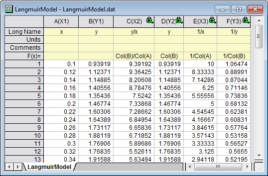
Lineare Anpassung auf transformierte lineare Daten
- Zuerst wird eine lineare Anpassung auf die traditionelle lineare Langmuir-Transformation durchgeführt. Markieren Sie SpalteDund wählen Sie im Menü Zeichnen: Symbol: Punktdiagramm, um ein Punktdiagramm zu erstellen.
- Um eine lineare Anpassung durchzuführen, wählen Sie Analyse: Anpassen: Linearer Fit: Dialog öffnen, um den Dialog Lineare Anpassung aufzurufen. Klicken Sie auf OK, um den Dialog zu schließen. Wählen Sie in der angezeigten Befehlseingabe die Option Nein und klicken Sie auf OK.
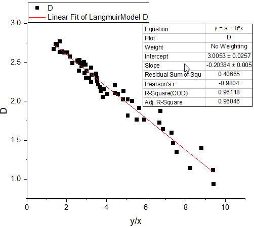
- Entsprechend wird die lineare Anpassung auf die doppelt reziproke lineare Langmuir-Transformation durchgeführt. Markieren Sie Spalte F und befolgen Sie die obenstehenden Schritte, um ein Punktdiagramm zu erstellen und dann eine lineare Anpassung durchzuführen.
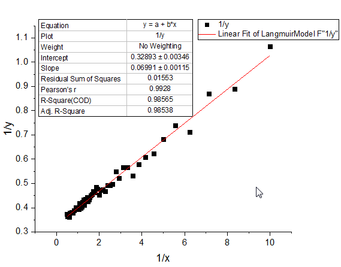
Die Koeffizienten im Langmuir-Modell können dann mit Hilfe der entsprechenden Ausdrücke für Steigung und Schnittpunkt mit der y-Achse berechnet werden.
Scheinbare lineare Anpassung auf nichtlineare Originaldaten
Alternativ können Sie die scheinbare lineare Anpassung verwenden, um die lineare Anpassung direkt auf die nichtlinearen kinetischen Rohdaten durchzuführen, indem nur die Achsenskalierungen benutzerdefiniert angepasst werden. Nehmen Sie das kinetische Langmuir-Modell als Beispiel. Basierend auf der doppelten reziproken Langmuir-Transformation können Sie sehen, dass die Inverse der originalen abhängigen Variablen 1/y in einem linearen Verhältnis zur der Inversen der originalen abhängigen Variable 1/x steht. Daher würden, wenn die X-Skalierung auf 1/x und die Y-Skalierung auf 1/y gesetzt ist, die kinetischen Langmuir-Rohdaten mit Linearität angezeigt werden.
- Um eine scheinbare lineare Anpassung auf kinetische Langmuir-Rohdaten durchzuführen, markieren Sie die Spalte B und wählen Sie Zeichnen: Symbol: Punktdiagramm, um ein nichtlineares Punktdiagramm zu erstellen.
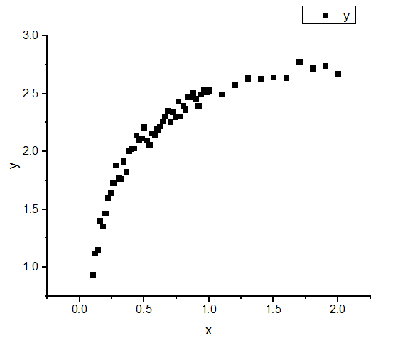
- Klicken Sie auf doppelt auf die X-Achse, um den Dialog Achsen zu öffnen, und setzen Sie Von auf 0,08 und Bis auf 3. Wählen Sie dann Benutzerdefinierte Formel in der Auswahlliste Typ und geben Sie 1/x als Direkte Formel und 1/x als Inverse Formel ein. Wählen Sie Fest ab in der Auswahlliste Neuskalieren. Klicken Sie auf OK, um den Dialog zu schließen.
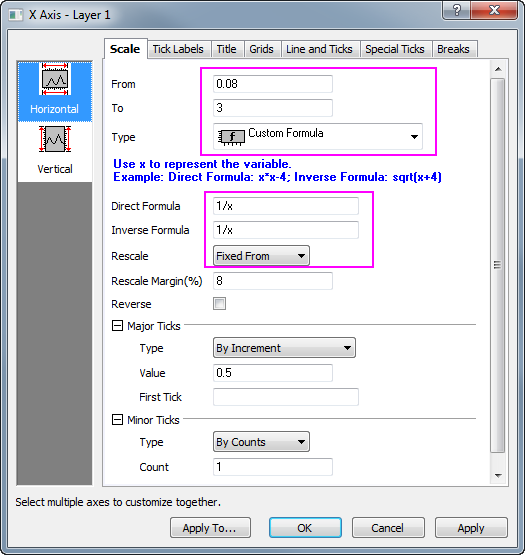
- Wie im Diagramm zu sehen, sind die Standardhilfsstriche der X-Achse nicht gut voneinander getrennt. Um die Anzeige der Hilfsstriche auf der X-Achse zu verbessern, erstellen Sie einen Datensatz, mit dem die Positionen der Hilfsstriche festgelegt werden. Dazu aktivieren Sie das Arbeitsblatt LangmuirModel und drücken die Tasten Strg+D, um eine Spalte hinzuzufügen. Geben Sie den Datensatz 0,1, 0,15, 0,2, 0,3, 0,4, 0,7, 1, 3 in die neu hinzugefügte Spalte G ein.
- Um die Spalte G als Positionen für die großen Hilfsstriche zu verwenden, klicken Sie doppelt auf die X-Achse. Der Dialog Achsen wird geöffnet. Gehen Sie dann zum Zweig Große Hilfsstriche und wählen Sie Nach Datensatz in der Auswahlliste Typ. Wählen Sie [LangmuirModel]LangmuirModel!G in der Auswahlliste Datensatz.
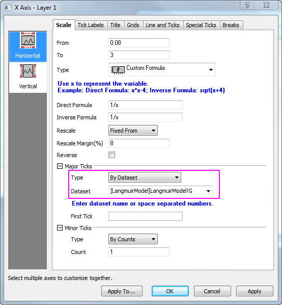
- Klicken Sie auf das Symbol Vertikal im linken Bedienfeld und wählen Sie Benutzerdefinierte Formel in der Auswahlliste Typ und geben Sie 1/x in den Feldern Direkte Formel und Inverse Formel ein. Klicken Sie auf OK, um den Dialog zu schließen.
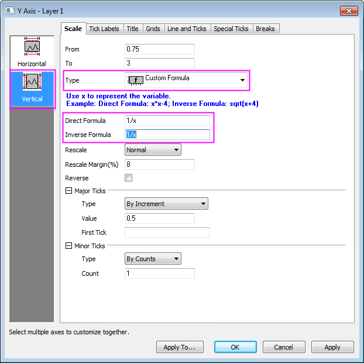
- Um die scheinbare lineare Anpassung durchzuführen, wählen Sie Analyse: Anpassen: Linearer Fit: Dialog öffnen, um den Dialog Lineare Anpassung zu öffnen. Das Kontrollkästchen Scheinbarer Fit ist standardmäßig aktiviert.
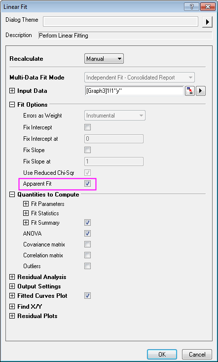
- Klicken Sie auf OK, um den Dialog zu schließen, und wählen Sie die Option Nein in der Befehlseingabe. Klicken Sie dann auf OK.
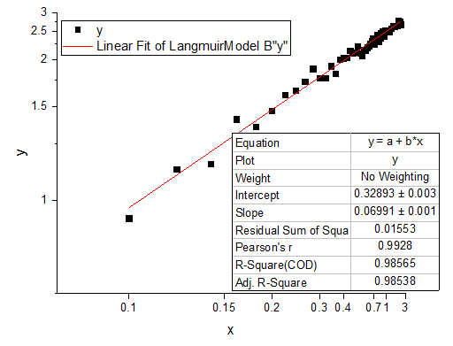
Lösungen für weitere nichtlineare kinetische Modelle
Freudlich-Gleichung
Die nichtlineare kinetische Gleichung für die Pseudo-zweite Ordnung und das Modell nach Ho sieht folgendermaßen aus:
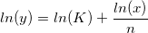
wobei die unabhängige Variable ln(x) ist, die abhängige Variable ln(y), die Steigung 1/n und der Schnittpunkt mit der Y-Achse ln(K), K. n sind die noch zu bestimmenden Koeffizienten.
Die scheinbare lineare Anpassung wird empfohlen, seit die Ln-Skalierung eine standardmäßige Skalierungseinstellung ist. Um dieses nichtlineare kinetische Modell anzupassen, verwenden Sie den scheinbaren Fit und setzen dabei beide Skalierungen, sowohl für die X- als auch für die Y-Achse, auf Ln-Skalierung.
Alternativ können Sie eine lineare Anpassung durchführen, nachdem Sie den Ln-Wert des X- und Y-Datensatzes berechnet haben. Einzelheiten können Sie in dem Beispiel zum Langmuir-Modell oben nachlesen.
Pseudo-erste Ordnung nach Lagergren
Die nichtlineare kinetische Gleichung für die Pseudo-erste Ordnung oder das Modell nach Lagergren sieht folgendermaßen aus:
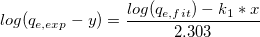
wobei die unabhängige Variable x, die abhängige Variable 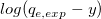, die Steigung  und der Schnittpunkt mit der Y-Achse und 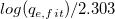 eine bekannte Konstante ist. 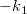 und
und der Schnittpunkt mit der Y-Achse und 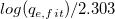 eine bekannte Konstante ist. 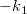 und  sind die noch zu bestimmenden Koeffizienten.
sind die noch zu bestimmenden Koeffizienten.
Die scheinbare lineare Anpassung wird empfohlen, seit die Log-Skalierung eine standardmäßige Skalierungseinstellung ist. Um dieses nichtlineare kinetische Modell anzupassen, berechnen Sie zuerst 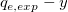 und verwenden dann den scheinbaren Fit mit nur der Skalierung der Y-Achse festgelegt auf Log.
Alternativ berechnen Sie zuerst 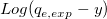 und verwenden dann die neu erstellten Daten, um die lineare Anpassung direkt durchzuführen. Einzelheiten können Sie in dem Beispiel zum Langmuir-Modell oben nachlesen.
Pseudo-zweite Ordnung nach Ho
Die nichtlineare kinetische Gleichung für die Pseudo-zweite Ordnung und das Modell nach Ho sieht folgendermaßen aus:
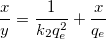
wobei die unabhängige Variable x, die abhängige Variable x/y, die Steigung 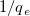 und der Schnittpunkt mit der Y-Achse 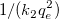 ist. 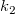 und 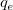 sind die noch zu bestimmenden Koeffizienten.
Um dieses Modell linear anzupassen, müssen Sie zuerst x/y berechnen und diese neu erstellten Daten für die Durchführung der linearen Anpassung verwenden.
Alternativ können Sie diese Gleichung in die untenstehenden Form transformieren:

wobei die unabhängige Variable 1/x, die abhängige Variable 1/y, die Steigung und der Schnittpunkt mit der Y-Achse ist.
Für diese Transformation können Sie entweder eine lineare Anpassung durchführen, sobald Sie neue unabhängige Variablendaten mit 1/x und neue abhängige Variablendaten mit 1/y erstellt haben. Oder Sie können eine scheinbare lineare Anpassung durchführen, indem Sie die Skalierungen für X- und Y-Achse beide auf 1/x-Skalierung festlegen. Weitere Einzelheiten finden Sie im Abschnitt zum Langmuir-Modell.